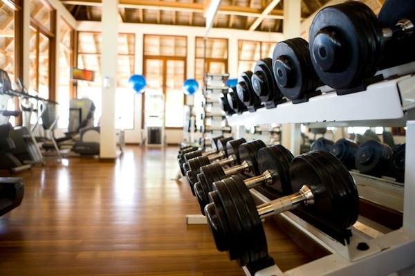

Parametry treningu siłowego - tempo (170)
Artykuł ten rozpoczyna serię tekstów omawiających podstawy treningu siłowego. Jako pierwszy zostanie opisany parametry dotyczący najbardziej podstawowej jednostki treningowej, czyli jednego powtórzenia...
KURS
DLA POCZĄTKUJĄCYCH
TEST WIEDZY